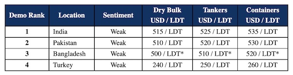

inWeekly Demolition Reports29/11/2022

After the announcement by the Indian government that they would reduce export duties on iron ore and steel products, the Alang market surged by Rs. 4,000 (about USD 49) in a single day, only to come crashing down in subsequent days to the tune of USD 50/Ton by the time the weekend had arrived.
In the midst of this surge, there was one Capesize Bulker sold for HKC / strictly green recycling into India, and it is hoped that some stability on prices will be found in the week(s) ahead.
Notwithstanding, sub-continent steel plate prices have plummeted greatly this week (especially in India and Bangladesh), further adding to the ongoing stresses that have become routine in the sub-continent markets.
Bangladesh remains on the sidelines with no new L/Cs being issued by the Central Bank and only a handful of private banks / local Buyers able to open L/Cs on (primarily) small(er) LDT units.
It remains a very cautious and tentative market across the board, with most Ship recyclers deeply embedded in a wait-and-watch mode, expecting prices to fall below USD 500/LDT and currently reluctant to dip into the market on fresh purchases until a some sort of a sustained period of stability is witnessed.
Mercifully, the supply of tonnage remains low, despite dry bulk and container rates having cooled off considerably in the fourth quarter of this year. Owners have made decent money on their trading vessels this year and it seems they would rather hold and continue trading at these lower rates, rather than face the uncertain recycling realities of today.
As such, it is not expected to be a frantic end to the year across sub-continent markets, but rather a trickle of candidates may arrive to the few keen and capable recyclers who are open to acquire ahead of an anticipated busier 2023.
For week 47 of 2022, GMS demo rankings / pricing for the week are as below.

📄 Download PDF: Ship-recycling-market-insight-week-47-2022-Duties-Reduced-Prices-Down.pdfSource: GMS,Inc. ,https://www.gmsinc.net/gms_new/index.php/web